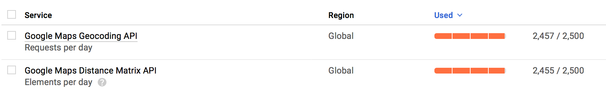
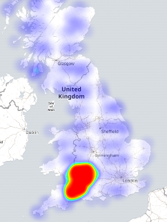
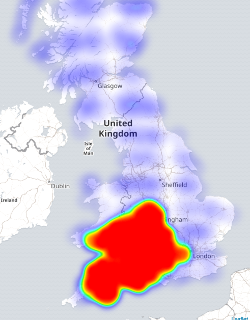
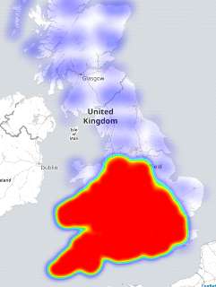
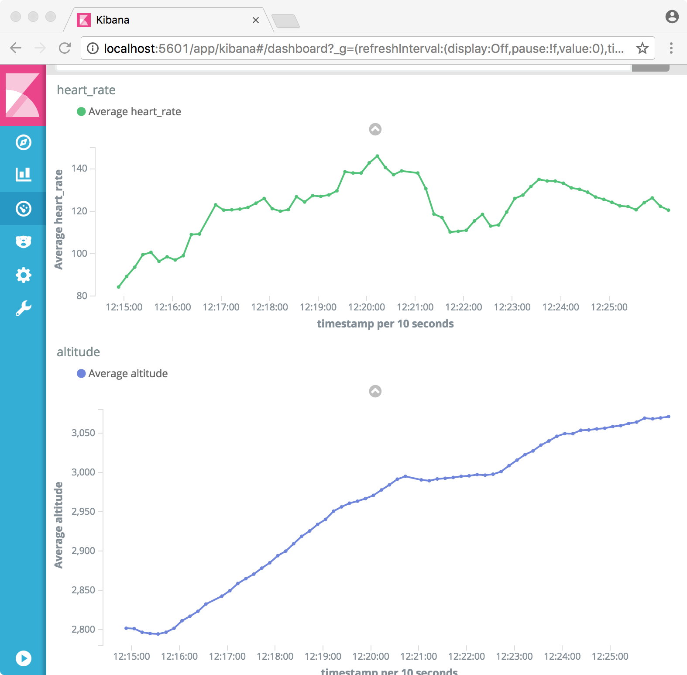
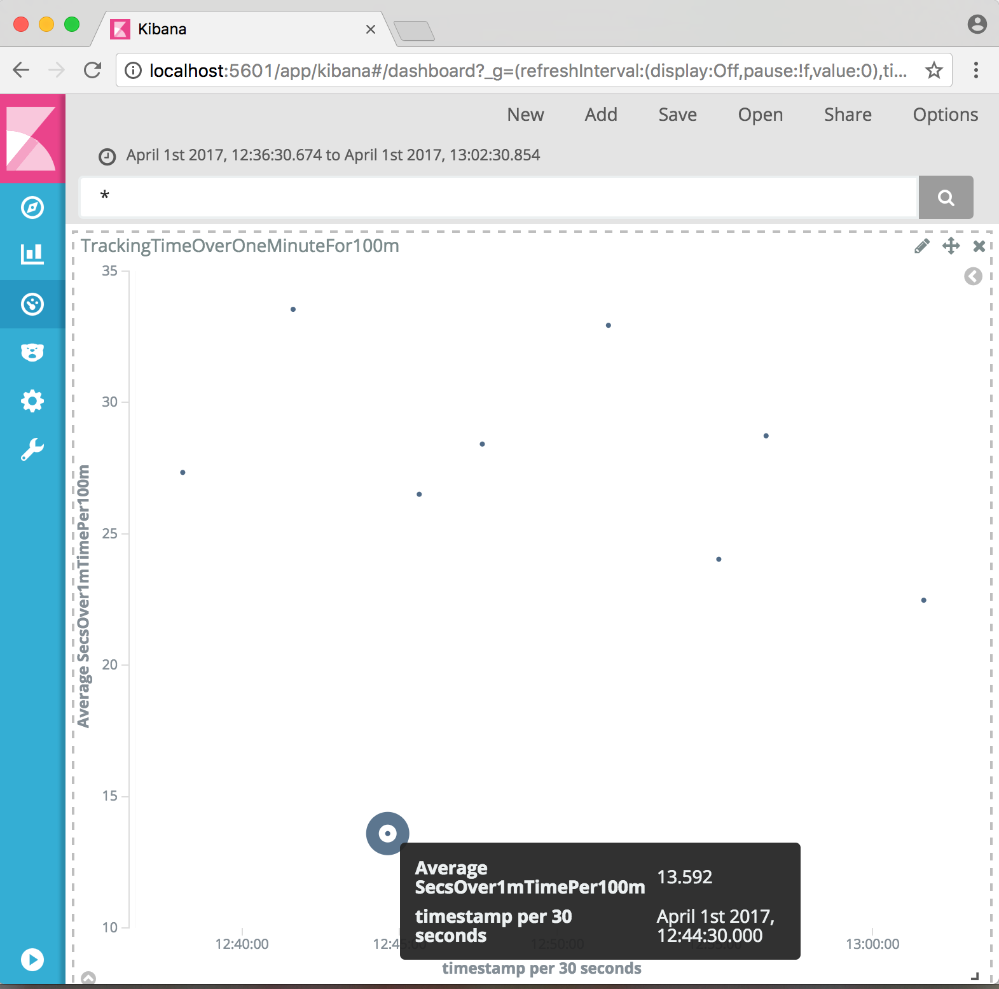
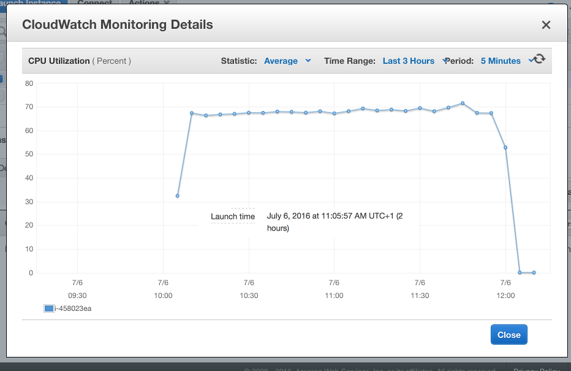
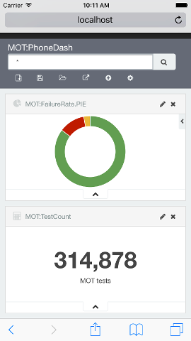
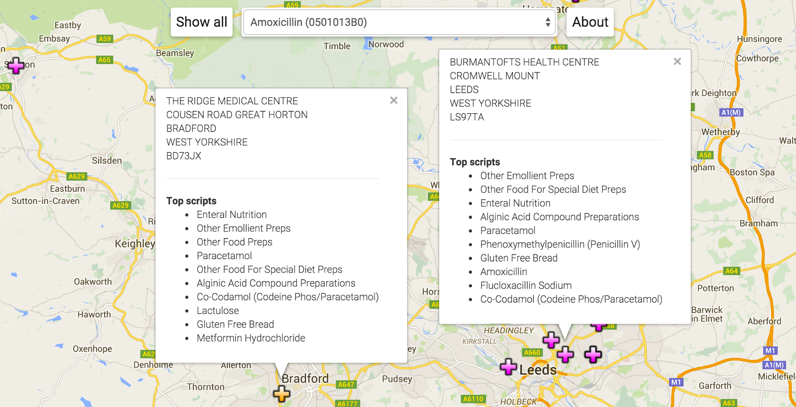
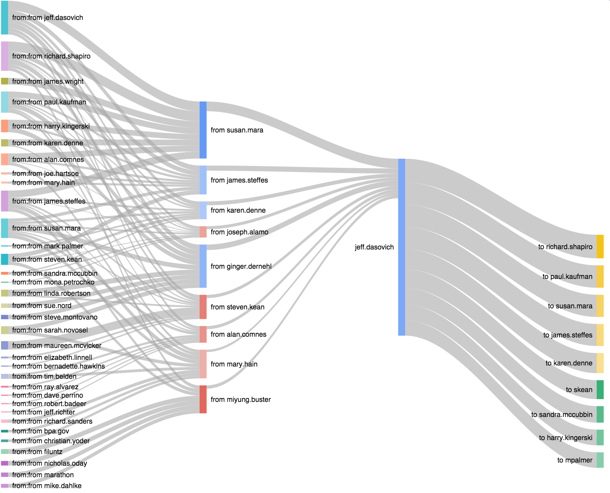

Somewhere to keep ...
things that are done because I need to learn by doing.
Returning to the Food Standards Agency
Map boundaries (left) rather than county boundaries (right) define what ratings are pinned to the map.
Site Heroku hosted Javascript app.
JavaScript to generate dynamic set over Google's mapping API.
Dissatisfied with the static first swing at pinning the FSA rankings on a map, I wanted to dynamically pin the food outlets based on the boundaries of a a map. This switches the load of thousands of pins for the county to however many were within the selected visible area. County border problems taken care of at the same time.
Getaway driving
Site Pseudo driving distance via a heatmap in Google maps
Wondering about day trip options with a budget of only 2500 drive-time lookups per day with the google API. Distilled the UK into about a nine thousand point grid (a week of free scraping) by taking the Code-Point Open data and finding the middle-most of each 5km box.
Four days of burning my quota to get driving distance and do a lat/long lookup (too lazy to calculate form the OS gridpoint): 
There were a few unroutable destinations. Naturally remote places included a fair few in islands off the coast or in a loch of Scotland, off Wales, and off Cornwall. A fair bit of the Shetland Islands were routable bar these. Novel places that wouldn't route were a Parrot Sanctuary and a cement and rubble company.
There's a fair bit of Scotland without enough postcodes to request a route. You can see the data grid by zooming in on the google heatmap.



Fitness data
Heart rate nice and low on the train but walking to the park and ride, while faster than the bus that day, was a fair trek. My heart rate looks like a terrain proxy.
Python & Javascript to ETL Garmin or Strava files into Elasticsearch.
My goal is to swim 100m in one minute. Practice is what will count, but tracking how well I'm doing is interesting. There's the corporate Garmin connect and Stephane's Swimming Watch tools to look at your stats. However, there's a tonne more data coming out of a fitness watch. And I need to practice a little more ETL.
The Garmin watches turn out a FIT format file that is licenced but available to developers through an SDK. The code includes a patch to the SDK example (cpp/examples/decodeMac) to emit something more JSON-like to feed into a python loader for elastic search.
The Strava downloads are GPX format XML files. These are converted with a little Node/Javascript before another python loader for elastic search.
Just to make sure the data is loaded, a quick check with proper science says the first five minutes of walking to the pool shows altitude causing my heart rate ;)
The goal measurement is done in Kibana as a scripted field from the Garmin avg_speed field (milimeters per second).
(doc['avg_speed'].value==0.0)?0.0:((100.0/(doc['avg_speed'].value/1000.0))-60.0)gives the number of seconds I'm over the pace of one minute for 100m. First swim with a cold and watch that broke on its first outing in an odd-length pool but I have numbers! 
Vehicle test result dashboard
I didn't know the average vehicle was over nine-years old on the day it was put in for its MOT.
I needed to write an ETL in Python, and I wanted to start to use Kibana in anger. Python seems inescapable and I spent a few days trying to get to grip with the basics. Unlike the other visualisations, Kibana runs as a live service, atop an equally live Elasticsearch instance. After running on my laptop, I could then re-benchmark and host this on a cloud service for demonstrations.
I took the 2013 results data as this was the most recent data set and at 36m rows was a reasonable sized sample. The ETL code, like all the others, basically takes one line at a time from the CSV file and turns it into a Python dict. These are aggregated and pushed into Elastic search through the bulk interface. The (single threaded, single buffered) job takes an hour on my macbook and two hours on a two-core AWS instance. It took an hour longer on a Google Compute instance but I wasn't really sure I was doing it right
I loaded the data from the compressed file (and stripped the UNCLASSIFIED vehicles) to minimise read-bandwidth and disk space
$> mkfifo data.pipe $> gunzip -c data/test_results.gz | sed -e "/UNCLASSIFIED/d" > data.pipe & $> etl/MOT.csv.to.es.py data.pipe
To get satisfactory dashboard performance, I ended up choosing a four core instance (n1-highcpu-4) with 3.6 GB memory for the Elastic server and a simple one-core (n1-standard-1) for the Kibana server. The loaded Elastic index was about 4Gb and the Java runtime never used all the RAM. This costs about 20p per hour to run.
The most popular vehicle tested was the Ford Focus Zetec, filtered with two clicks on the pie charts and a wait of a couple of seconds as the 36m rows are processed. They're generally two years older, and fail more often than the average vehicle tested.
Ferraris, on the other hand, are rarer, younger and fail their MOTs less. The time that Ferraris are tested, biased towards the end of winter and spring suggests, perhaps, these are summer cars. Clearly red, is the colour for your Ferrari. Somehow, there are a couple of MOT records for diesel Ferraris?
A summary metrics dashboard showing the data for two days fits nicely on a phone. The beauty of Kibana and Elasticsearch setup like this means a live feed into into Elastic permits auto-refresh (5 second) updates to trends of metrics that are operationally critical as I was able to see when developing the dashboard and loading the 36m rows simultaneously.
Prescription trends
I wanted to know what we were medicating our prisoners with. Then I wanted to see the historical trending top ten things written there. Type 'HMP' in the search box to see.
Analysing three times as much data as the prescription drug map below (over thirty million rows) and trending the top ten with a trivial search by practice address. Slopegraphs in the league position style rather than the prescribed quantity show relative positions rather than relative volume.
Top drug writers
Is the surgery opposite the watersports park still the top place for dispensing entonox? What are we mostly medicating prisoners with?
Look at which practice/pharmacy writes the most of a given drug.
More JavaScript in the client, with the google maps API, and a proper aggregation in elastic search. The key structure is the practice record:
var practices = { ...
"Y02307": {
"latlng":{"lat":51.4806202,"lng":-2.590658},
"list":["0410030C0","0407010P0","0408010AE","0401020K0",
"0403010B0","0410030A0","0109040N0","0403030Q0",
"0402010AB","0403010V0"],
"address":["HMP BRISTOL","19 CAMBRIDGE ROAD","BRISTOL","","BS78PS"]
},
...
};
The practice ID is a foreign key in the source data set joining the prescription records to the address. I can use this when keying from the drug record below. Y02307 is the prison in Bristol. I used google's geocoder to generate and cache the latitude & longitude -- in batches because of the 2,500 per day limit. The list is the top ten, in decreasing order, BNF codes for the drugs prescribed by this practice. For comparison, the aggregation in SQL
sql> select bnf, sum(quantity) q from prescriptions where practice='Y02307'
group by bnf order by q desc limit 10;
Is about what I get from the elastic aggregation
$> curl 'localhost:9200/_search?q=practice:Y02307&size=0'
-d '{
"aggs": {
"by_drug": {
"terms": {
"field": "bnf",
"order" : {"total_quantity":"desc"}
},
"aggs": {
"total_quantity": {"sum": {"field": "quantity"}}
}
}
}
}'
The source data provides readable BNF translations for non-medics. For the drug-to-map client, I have a similar but inverted elastic aggregation. This is the top ten locations prescribing a given BNF.  The Ridge Medical Centre writes more Amoxycillin than Burmantofts Health Centre even though Amoxycillin is in the top ten things written at Burmantofts and not in the top ten at Ridge. What's not shown is how many patients each practice is serving.
Stylometry & stylo-sympathy
I wondered how real stylometry might be and, better than that, could a machine help me write sympathetically in a given style? It arose from wondering about simultaneous multiple auto-suggest feeds and the request to not be quoted at length.
Write-like a few classics and compare them too.
JavaScript to generate word-distribution distillates; compare them and consume them.
I started with a body of standard texts: The King James Bible and the complete works of Shakespeare. I'd used both before as sources of word streams for benchmarking. Before analysing, I picked up a couple more samples that I might want to compare which meant all of Jane Austen and Bronte's Shirley to go with Shakespeare; an English translation of the Koran and an English translation of the Mahabharata of Krishna to weigh against a partitioned Bible (old and new testaments). The first step was to distill the text into something to use for both auto-suggesting and a basis for the comparison operation. The end resut was a Markov- chain like structure:
residue = ["word_1": ["following_word_1.1", "following_word_1.2", ... ],
"word_2": ["following_word_2.1", "following_word_2.2", ... ], ...
]
Where the words in the structure above are frequency sorted. I dropped the occurence counts for precise distributions and assumed a common (power-) curve for simplicity.
First to use the output were the auto-suggesters based on Nicholas Zakas' tutorial. Using a simple probability distributon function to pick the next word, iterated a few times and while I typed, a satisfactory prompt came from the suggester.
To compare two Markov-chains -- I haven't read anything about how stylometry is done properly -- I used a three dimensional metric that I could bubble-chart using CanvasJS charts for a change. The size of the intersection of two word lists as a percentage of the union is the y-axis (inness) and the absolute size of the intersection is the bubble size. This is to give an idea of the commonality between two texts. This doesn't eliminate inescapable common word- pairs of a written language but might give a sense of overlap. The third dimension (x-axis in the example) is the frequency order comparison (likeness) computed as a rank correlation using the simple statistics library. Both the parallel suggesters and the bubble-chart with annotations are intersting to play with as a result.
Sankey diagrams of Enron email via Elasticsearch
An excuse to draw Sankey diagrams and learn to do aggregations in Elasticsearch. The Enron mail corpus fit and was plenty less trendy than twitter/facebook feeds. Check out Vince Kaminski (an objector to the practices with a fat cc: pipe to himself outside of Enron) or Rosalee Flemming (Ken Lay's assistant, a broadcast beacon to the top brass).
Sankey diagrams (with clickable fudge).
JavaScript to generate Sankey diagrams from aggregates collected from Elasticsearch.
The tarball of data needed loading into Elasticsearch. I used mailparser in processing each file to generate an Elasticsearch entry demultiplexing multiple names on the To: line.
node mail.to.es.js .../enron/enron_mail_20110402/maildir/crandell-s/inbox/2.
The simple, first Sankey aggregations I wanted was the bowtie as in the image above. This would effectively be the pair:
SELECT 'FROM', COUNT(*) AS C WHERE 'TO'='mike.mcconnell' FROM ENRONMAIL GROUP BY 'FROM' ORDER BY C DESC; SELECT 'TO', COUNT(*) AS C WHERE 'FROM'='mike.mcconnell' FROM ENRONMAIL GROUP BY 'TO' ORDER BY C DESC;
Shove that into a basic Sankey and you're away. I wanted to make the full set and have them navigable by clicking on the names of the branches to recentre the bowtie. Initially, that wasn't possible but the StackOverflow community got me to the right remedy.
I used a modified version of the Sankey generator and iterated it a few times on the list of names it found to build a three-degrees from Rick Buy (or whoever) totaling 1826 names to then batch run the lot. Sankeyfying for those names took 2mins 12secs. That's fast enough to do on demand.
First pass at a batwing to just extend the left (from/from) helped with error discovery. Added lots of <namestring>.replace(/\'/g,""); for the O'Days, O'Haras, O'Keeffes and so on. I could've escaped them or like I have here, just dropped them.
A matching set of batwings linked to bowtie Sankey views (click the centre namebar) generated in 2mins 59secs for twenty times as much work done in Elasticsearch. Still sub a tenth of a second each. Possible on demand then, probably while continually indexing new documents as they pass through the mail system.
JavaScript via the Food Standards Agency
I wanted to learn a little JavaScript and being a non-UI person I did learnyounode until I thought I had enough to start something in anger.
FSA inspection ratings gathered by county pinned over Google's map.
JavaScript to generate static HTML set over Google's mapping API.
I wanted all the data, and it comes in XML and JSON options. Curl it in batches via
curl http://ratings.food.gov.uk/search/%5E/%5E/1/5000/xml
Where %5E (^) effectively means a wildcard for both the name of the county and the establishment that was inspected. Replace xml with json for JSON formatted equivalent. 1 is the page number and 5000 the page size. That's the largest page size I managed to collect -- for a total of about a hundred pages, the result includes metadata with the number of pages at your selected page size. The GitHub repo has an example HTML output for just the first 5000 elements.
As published, the data is partitioned into counties so I scraped the 406 files by curling the data page and piping it through grep http://ratings.food.gov.uk/OpenDataFiles/ | grep English to see something I could use cut to strip out the county names and the file names to re-curl. The GitHub repo has the xml data for North Somerset as a snapshot.
Google maps with pins are surprisingly simple. After installing xml2js to parse the xml with:
var xml2js = require('xml2js');
var parser = xml2js.Parser();
parser.parseString(data, function (err, result) {...
The inspection set for this county (loaded into data via fs.readFile()) is now navigable as a JavaScript object.
Wanting to avoid re-writing it with a cached set of jump-pins I bulk converted all the xml files to JSON with JSON.stringify() as the body to the callback of the xml2js::parser.parseString() function and exchanged the xml parser call to a JSON parser call (JSON.parse(data)). Took only a couple of minutes.